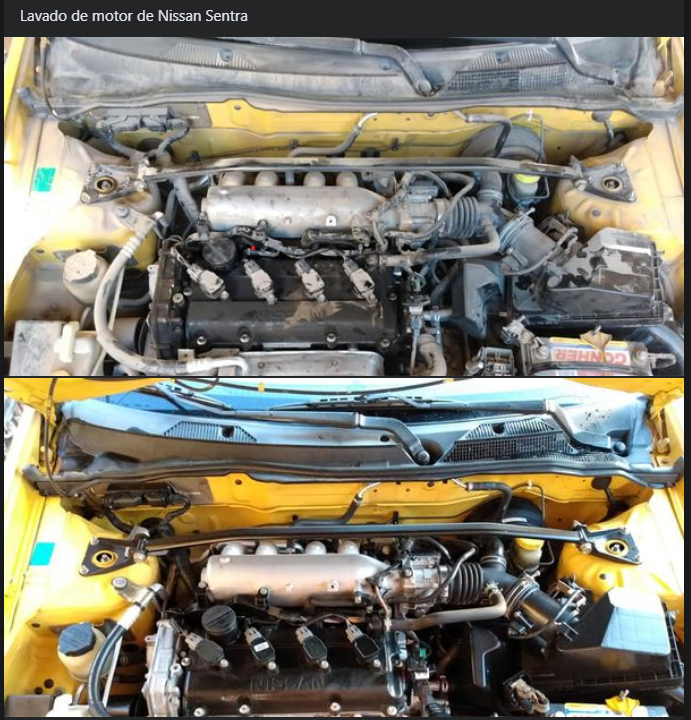
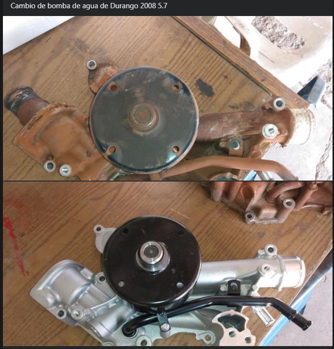

Galería



En Taller Labrada somos un taller mecánico con una larga trayectoria en el mercado. Nuestro compromiso es brindar un servicio confiable y de calidad a nuestros clientes. Contamos con un equipo de profesionales altamente capacitados que se especializan en el mantenimiento y la reparación de vehículos de todas las marcas y modelos. Nos enorgullece ofrecer soluciones eficientes y rápidas para cualquier problema mecánico que puedas tener. Nuestro objetivo es garantizar tu satisfacción y la seguridad de tu vehículo. ¡Confía en nosotros para todas tus necesidades automotrices!
Para más información sobre nuestros servicios o para programar una cita, no dudes en contactarnos: